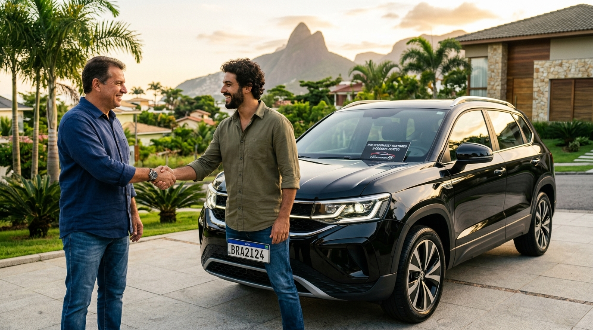

Oficina de Funilaria e Pintura em Osasco: O Que Observar Antes de Escolher
Confira os critérios indispensáveis para escolher sua oficina: estufa pressurizada com cura a 60°C, colorimetria computadorizada e garantia formal.
Ler Artigo Completo ➔Dicas de ouro, orientações práticas e autoridade técnica da FG Car para o motorista de Osasco e região metropolitana: critérios de escolha, sinais de confiança, leitura crítica de orçamentos e como valorizar seu carro antes da revenda.
Confira os critérios indispensáveis para escolher sua oficina: estufa pressurizada com cura a 60°C, colorimetria computadorizada e garantia formal.
Ler Artigo Completo ➔
Aprenda a fazer a inspeção dos carros no pátio, checar a ausência de névoa de tinta em borrachas e avaliar a reputação do estabelecimento.
Ler Artigo Completo ➔
Evite surpresas e cobranças abusivas na entrega. Saiba como checar a discriminação de peças originais, mão de obra e insumos de pintura.
Ler Artigo Completo ➔
Roteiro prático para encontrar uma oficina estruturada em Osasco com localização privilegiada, maquinário moderno e transparência total.
Ler Artigo Completo ➔
Entenda o cálculo de retorno financeiro e por que reparar amassados e riscos pontuais evita desvalorizações de até o triplo na mesa de negociação.
Ler Artigo Completo ➔Recuperação estrutural completa com orçamento transparente e atendimento para Osasco e região.
Tecnologia de colorimetria computadorizada e cabine própria na Av. Visconde de Nova Granada, 3151.
Soluções rápidas de alto custo-benefício para valorizar seu veículo na revenda ou uso diário.
A FG Car oferece estrutura com cabine pressurizada, equipe experiente e compromisso com prazos na Av. Visconde de Nova Granada, 3151 em Osasco. Tire dúvidas ou envie fotos agora mesmo pelo WhatsApp!
⚡ Conversar com Especialista no WhatsApp